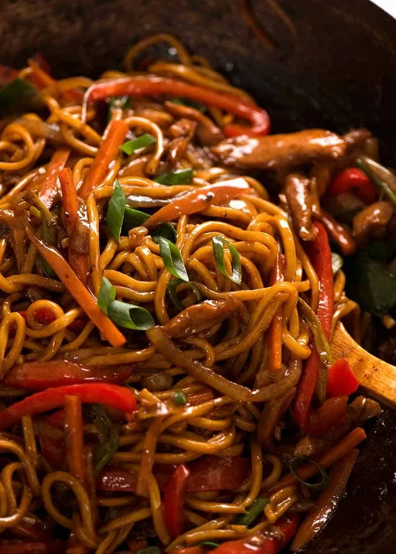

Lomein

This delicious lomein recipe is perfect when you are craving a savory and flavorful meal.
Ingredients
- 1/2 tablespoon of vegetable or peanut oil
- 2 garlic cloves
- 1/2 onion
- 300g chicken
- 2 medium carrots
- 1 large red bell pepper
- 6 green onions
- 500g of any noodles
- 1/4 cup of water
Sauce
- 4 teaspoons cornflour or cornstarch
- 2 tablespoons dark soy sauce
- 2 tablespoons soy sauce or light soy sauce
- 1 tablespoon chinese cooking wine
- 1 teaspoon white sugar
- 1/2 teaspoon sesame oil
- 1/4 teaspoon white pepper
Instructions
- Sauce: Mix cornflour and dark soy until lump free, then add remaining Sauce ingredients.
- Season Chicken: Transfer 2 tsp Sauce into bowl with chicken. Toss to coat.
- Heat oil in a wok or large heavy based skillet over high heat until smoking.
- Add onion and garlic, stir 30 seconds.
- Add chicken, stir until white on the outside, still raw inside – 1 minute.
- Add carrot and capsicum/bell peppers, cook 2 minutes or until chicken is cooked.
- Add noodles, Sauce and water. Use 2 wooden spoons and toss for 30 seconds.
- Add green onions, toss for another 1 minute until all the noodles are slick with sauce.
- Serve immediately, garnished with extra green onions if using.
Back to Meals